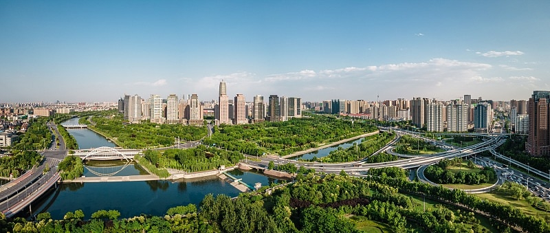
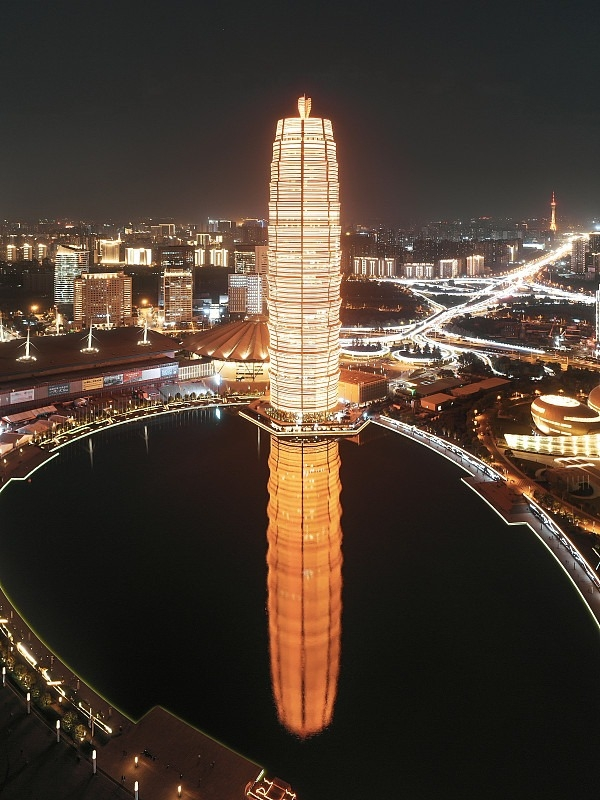
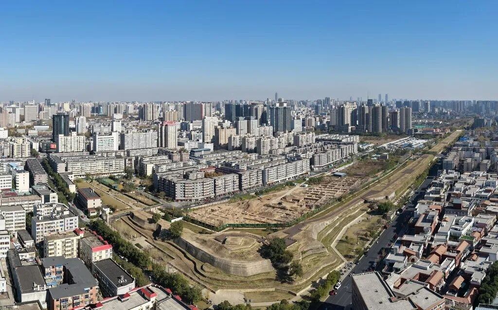
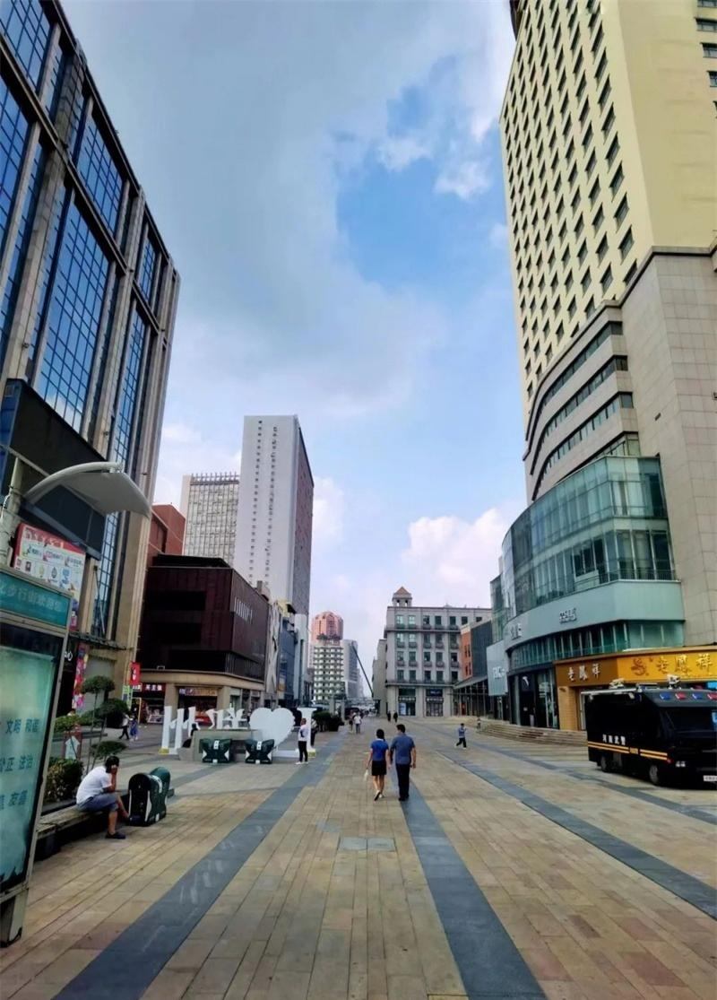
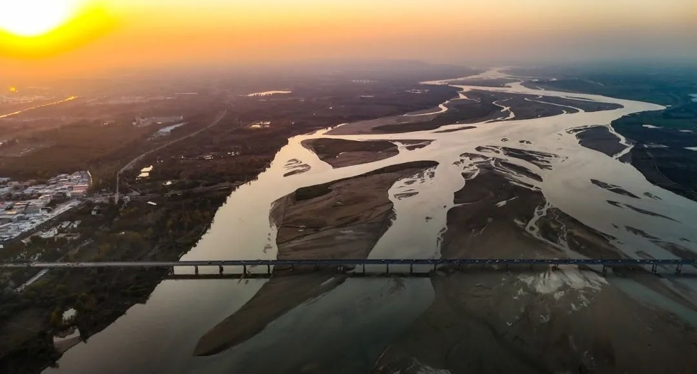
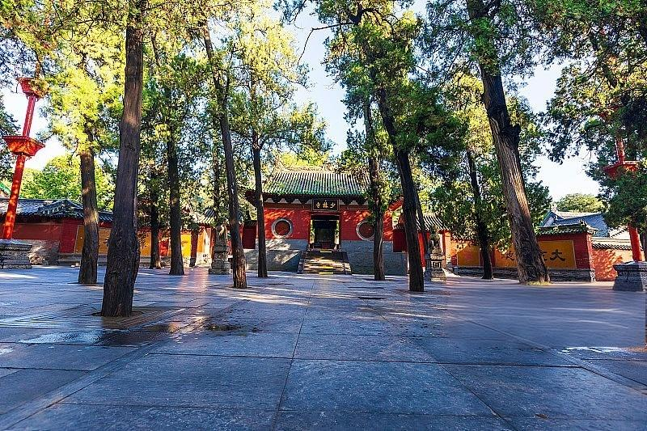
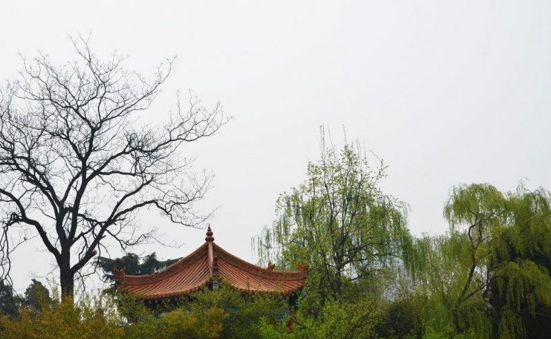
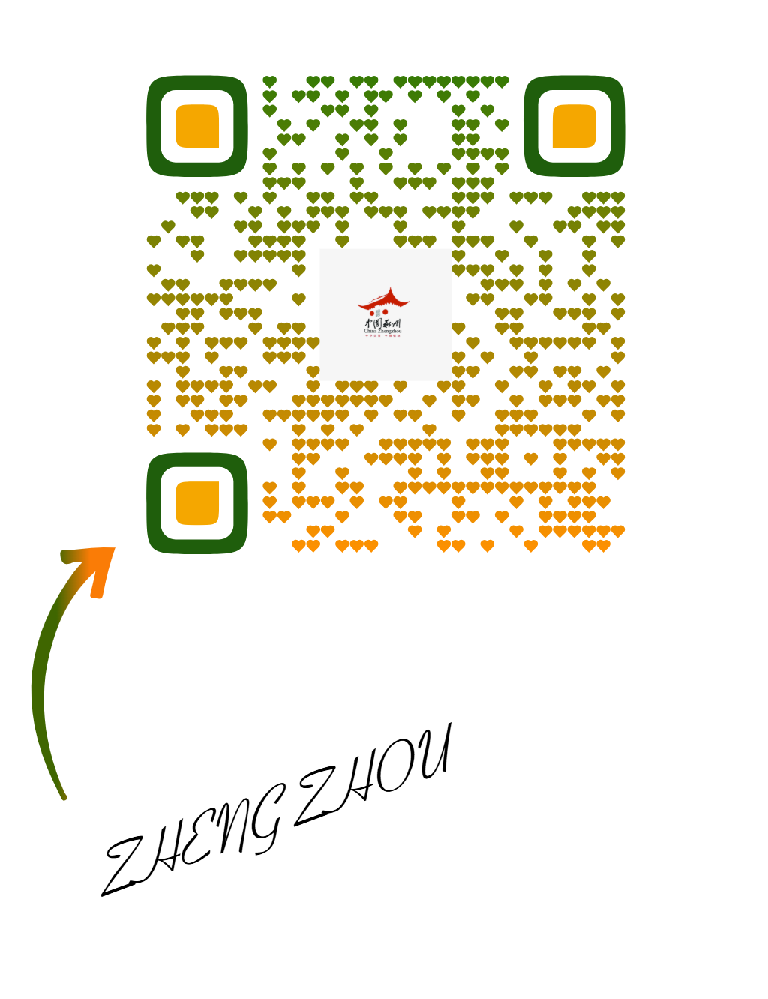

Zhengzhou – cradle of Shang Dynasty, heart of China’s railway network, and a city that never stops evolving.

Zhengzhou is known as “the city of railways” – the intersection of China’s north-south and east-west high-speed rail lines. Its rapid growth mirrors the nation’s transformation.
From a small county to a mega-city of 12 million, Zhengzhou embodies ambition and connectivity.

The Zhengzhou Central Business District lights up the Yellow River plain.

As one of the eight ancient capitals, Zhengzhou is home to the Shang Dynasty city wall (over 3600 years old). The Shang Dynasty Capital Ruins Park brings history to life.
Walk where bronze vessels were cast – the origin of Chinese urban civilization.




Just north of Zhengzhou, the Yellow River – China's “Mother River” – flows majestically. The Zhengzhou Yellow River Scenic Area offers a glimpse of both natural beauty and cultural heritage.
The city stands at the crossroads of north and south, ancient and modern.
Click the button to uncover hidden stories of this ancient capital 🌟
